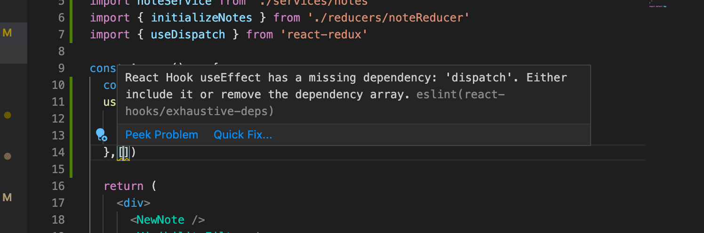

让我们扩展应用，使笔记被存储到后端。我们将使用json-server，这在第二章节中已经很熟悉。
数据库的初始状态被存储在文件db.json中，它被放置在项目的根部。
{
"notes": [
{
"content": "the app state is in redux store",
"important": true,
"id": 1
},
{
"content": "state changes are made with actions",
"important": false,
"id": 2
}
]
}
我们将为项目安装json-server...
npm install json-server --save-dev
然后在文件package.json的scripts部分添加以下一行
"scripts": {
"server": "json-server -p3001 --watch db.json",
// ...
}
现在让我们用命令_npm run server_来启动json-server。
接下来我们将在文件services/notes.js中创建一个方法，使用axios从后端获取数据。
import axios from 'axios'
const baseUrl = 'http://localhost:3001/notes'
const getAll = async () => {
const response = await axios.get(baseUrl)
return response.data
}
export default { getAll }
我们将axios添加到项目中
npm install axios
我们将改变noteReducer中状态的初始化，这样默认情况下就没有笔记了。
const noteSlice = createSlice({
name: 'notes',
initialState: [], // highlight-line
// ...
})
我们还要添加一个新的动作appendNote来添加一个笔记对象。
const noteSlice = createSlice({
name: 'notes',
initialState,
reducers: {
createNote(state, action) {
const content = action.payload
state.push({
content,
important: false,
id: generateId(),
})
},
toggleImportanceOf(state, action) {
const id = action.payload
const noteToChange = state.find(n => n.id === id)
const changedNote = {
...noteToChange,
important: !noteToChange.important
}
return state.map(note =>
note.id !== id ? note : changedNote
)
},
// highlight-start
appendNote(state, action) {
state.push(action.payload)
}
// highlight-end
},
})
export const { createNote, toggleImportanceOf, appendNote } = noteSlice.actions // highlight-line
export default noteSlice.reducer
基于从服务器收到的数据初始化笔记状态的快速方法是在index.js文件中获取笔记，并使用appendNote动作创建器为每个单独的笔记对象分派一个动作。
// ...
import noteService from './services/notes' // highlight-line
import noteReducer, { appendNote } from './reducers/noteReducer' // highlight-line
const store = configureStore({
reducer: {
notes: noteReducer,
filter: filterReducer,
}
})
// highlight-start
noteService.getAll().then(notes =>
notes.forEach(note => {
store.dispatch(appendNote(note))
})
)
// highlight-end
// ...
派遣多个动作似乎有点不切实际。让我们添加一个动作创建器setNotes，可以用来直接替换笔记数组。我们将通过实现setNotes动作，从createSlice函数中获得动作创建器。
// ...
const noteSlice = createSlice({
name: 'notes',
initialState,
reducers: {
createNote(state, action) {
const content = action.payload
state.push({
content,
important: false,
id: generateId(),
})
},
toggleImportanceOf(state, action) {
const id = action.payload
const noteToChange = state.find(n => n.id === id)
const changedNote = {
...noteToChange,
important: !noteToChange.important
}
return state.map(note =>
note.id !== id ? note : changedNote
)
},
appendNote(state, action) {
state.push(action.payload)
},
// highlight-start
setNotes(state, action) {
return action.payload
}
// highlight-end
},
})
export const { createNote, toggleImportanceOf, appendNote, setNotes } = noteSlice.actions // highlight-line
export default noteSlice.reducer
现在，index.js文件中的代码看起来好多了。
// ...
import noteService from './services/notes'
import noteReducer, { setNotes } from './reducers/noteReducer' // highlight-line
const store = configureStore({
reducer: {
notes: noteReducer,
filter: filterReducer,
}
})
noteService.getAll().then(notes =>
store.dispatch(setNotes(notes)) // highlight-line
)
**NB:**我们为什么不用await来代替 promise 和事件处理程序（注册到_then_-methods）？
等待只在async函数中起作用，而index.js中的代码不在函数中，所以由于操作的简单性，我们这次就不使用async了。
然而，我们决定将笔记的初始化移到App组件中，并且，像往常一样，当从服务器获取数据时，我们将使用effect hook。
import { useEffect } from 'react' // highlight-line
import NewNote from './components/NewNote'
import Notes from './components/Notes'
import VisibilityFilter from './components/VisibilityFilter'
import noteService from './services/notes' // highlight-line
import { setNotes } from './reducers/noteReducer' // highlight-line
import { useDispatch } from 'react-redux' // highlight-line
const App = () => {
// highlight-start
const dispatch = useDispatch()
useEffect(() => {
noteService
.getAll().then(notes => dispatch(setNotes(notes)))
}, [])
// highlight-end
return (
<div>
<NewNote />
<VisibilityFilter />
<Notes />
</div>
)
}
export default App
使用useEffect钩子会导致一个eslint警告。

我们可以通过下面的操作摆脱它。
const App = () => {
const dispatch = useDispatch()
useEffect(() => {
noteService
.getAll().then(notes => dispatch(setNotes(notes)))
}, [dispatch]) // highlight-line
// ...
}
现在我们在_App_组件中定义的变量dispatch，实际上是redux-store的调度函数，已经被添加到useEffect的数组中作为参数接收。
如果调度变量的值在运行时发生变化。
该效果将被再次执行。然而这不会发生在我们的应用中，所以这个警告是不必要的。
摆脱警告的另一个方法是在这一行禁用eslint。
const App = () => {
const dispatch = useDispatch()
useEffect(() => {
noteService
.getAll().then(notes => dispatch(setNotes(notes)))
// highlight-start
},[]) // eslint-disable-line react-hooks/exhaustive-deps
// highlight-end
// ...
}
一般来说，当eslint抛出一个警告时禁用它并不是一个好主意。尽管有关的eslint规则引起了一些争论，我们将使用第一个解决方案。
更多关于需要定义钩子的依赖关系，请看 React文档。
当涉及到创建一个新的笔记时，我们可以做同样的事情。让我们扩展一下与服务器通信的代码，如下。
const baseUrl = 'http://localhost:3001/notes'
const getAll = async () => {
const response = await axios.get(baseUrl)
return response.data
}
// highlight-start
const createNew = async (content) => {
const object = { content, important: false }
const response = await axios.post(baseUrl, object)
return response.data
}
// highlight-end
export default {
getAll,
createNew,
}
组件NewNote的_addNote_方法略有变化。
import { useDispatch } from 'react-redux'
import { createNote } from '../reducers/noteReducer'
import noteService from '../services/notes' // highlight-line
const NewNote = (props) => {
const dispatch = useDispatch()
const addNote = async (event) => { // highlight-line
event.preventDefault()
const content = event.target.note.value
event.target.note.value = ''
const newNote = await noteService.createNew(content) // highlight-line
dispatch(createNote(newNote)) // highlight-line
}
return (
<form onSubmit={addNote}>
<input name="note" />
<button type="submit">add</button>
</form>
)
}
export default NewNote
因为后端为笔记生成了ID，我们将相应地改变动作创建者createNote。
createNote(state, action) {
state.push(action.payload)
}
改变笔记的重要性可以用同样的原则来实现，通过对服务器进行异步方法调用，然后分派一个适当的动作。
该应用的代码的当前状态可以在GitHub的分支part6-3中找到。